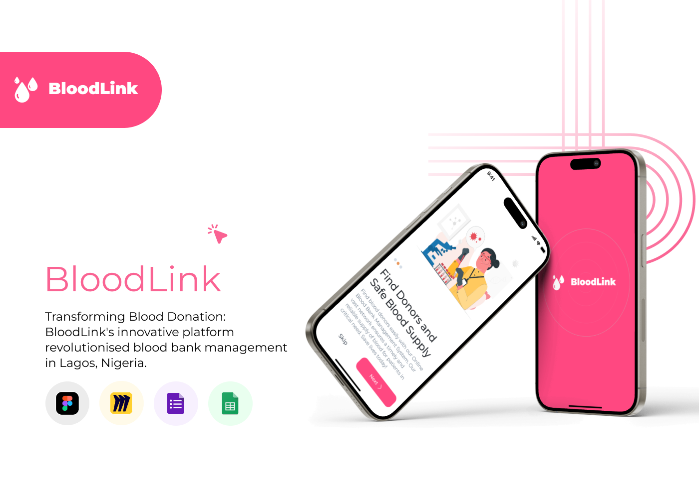
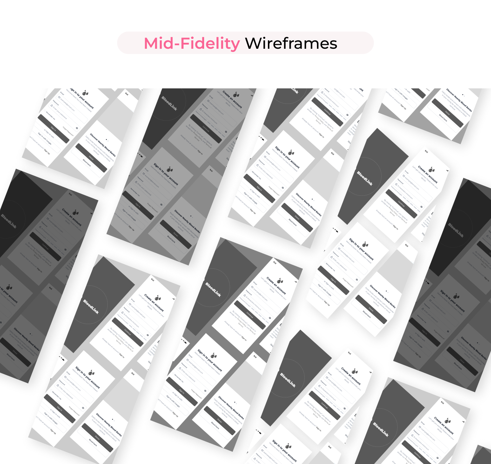
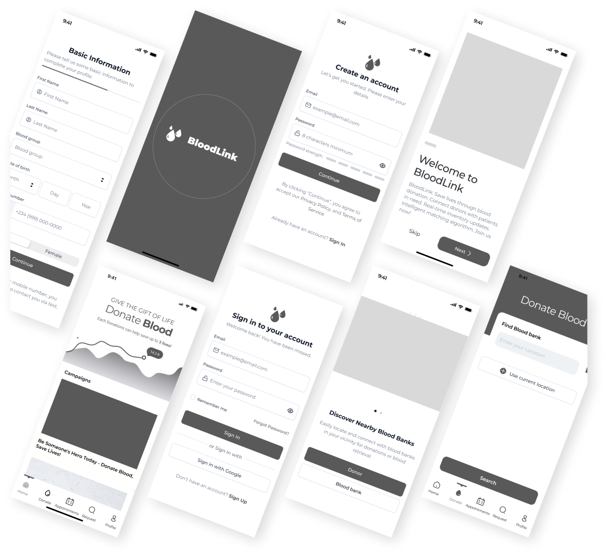
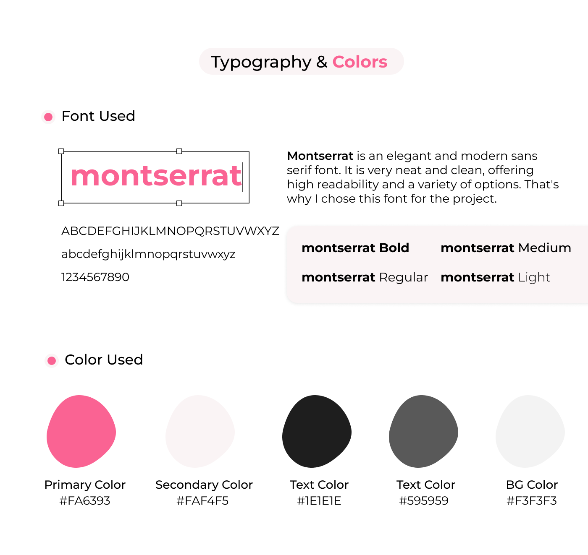
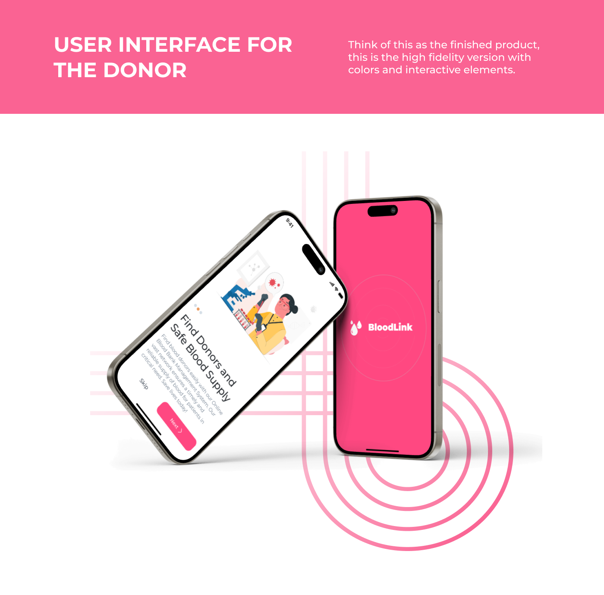
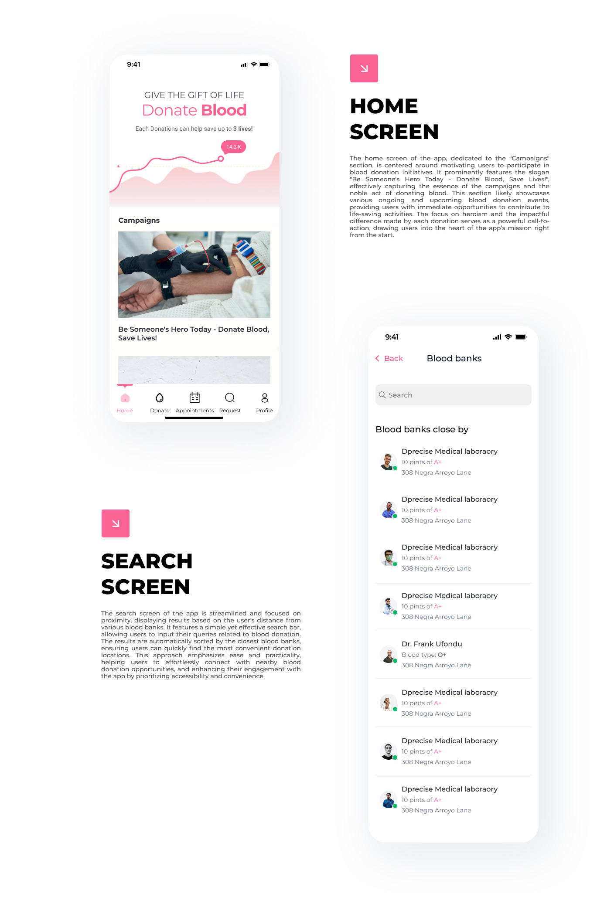
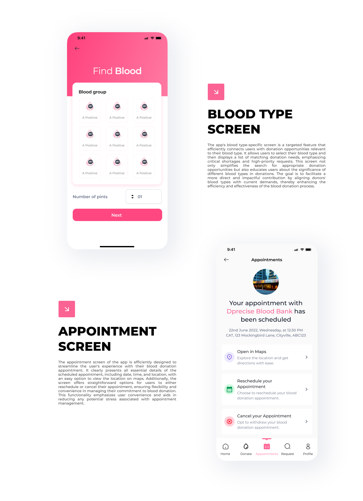
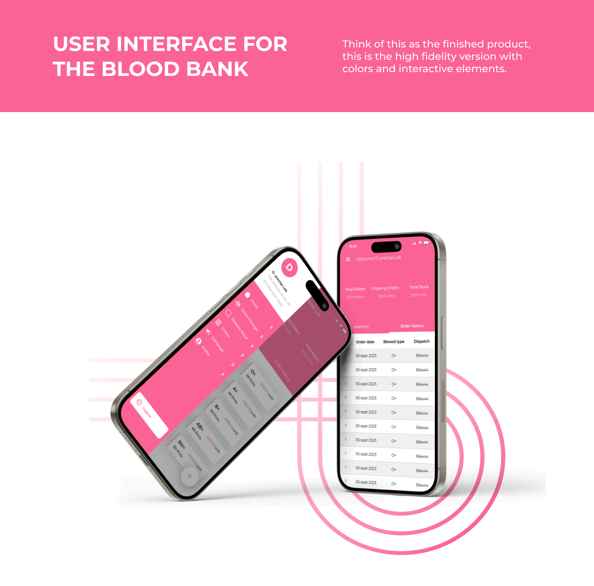
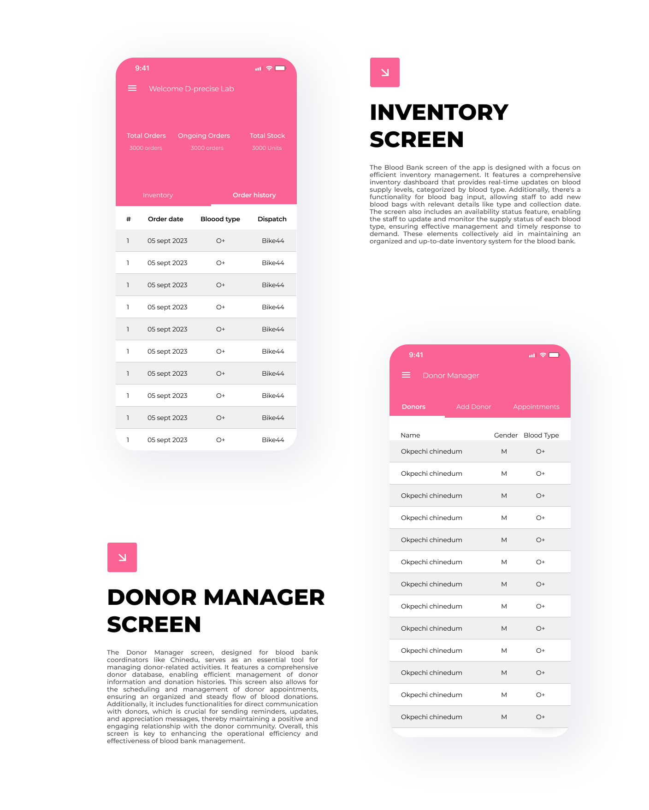

BloodLink is a purpose-driven mobile app focused on transforming blood donation and management in Nigeria. It connects donors, recipients, and blood banks through an intuitive digital platform, addressing critical healthcare challenges with thoughtful design and impactful features. This project emphasizes user-centered design, efficient data management, and real-time collaboration to support life-saving outcomes.
BloodLink is a purpose-driven mobile app designed to transform how blood donations are sourced and managed in Nigeria. By connecting donors, recipients, and blood banks through a seamless digital platform, BloodLink addresses a critical healthcare challenge with thoughtful UX and powerful functionality. This project combines design for social impact with performance-driven UI to create a life-saving tool for communities in need.
Blood donation is a critical part of modern healthcare, but it faces significant challenges, including low donor turnout, inefficient inventory management, and poor communication between blood banks and donors. The global demand for blood is rising, yet many regions struggle to maintain sufficient supplies, particularly for rare blood types. This creates a pressing need for digital platforms that can bridge the gap between donors and blood banks, ensuring timely, efficient, and transparent blood management.
To build a comprehensive digital platform that connects blood donors, blood banks, and healthcare providers, improving donor engagement, optimizing inventory management, and reducing critical blood shortages through data-driven, user-centric solutions.
As the Product Manager for BloodLink, I led the project from concept to prototype, focusing on:
• Market Research: Identifying user pain points and market gaps through surveys and
interviews.
• Product Strategy: Defining the product vision, roadmap, and core features based on user needs
and business goals.
• User Experience Design: Collaborating with designers to create intuitive, impactful user
interfaces.
• Stakeholder Management: Aligning product goals with stakeholder expectations, including blood
banks, healthcare professionals, and potential donors.
• Product Validation: Conducting usability testing, analyzing user feedback, and iterating
designs to ensure product-market fit.
The global blood donation ecosystem is plagued by critical inefficiencies that lead to dangerous shortages, high wastage, and inconsistent donor engagement. In many regions, the demand for blood consistently outstrips supply, while blood banks struggle to maintain accurate inventory levels. The disconnect between donors and blood banks results in missed opportunities, especially for rare blood types, putting lives at risk during emergencies.
• Low Donor Retention and Engagement – Many potential donors are unaware of the impact of their
contributions or find the process too cumbersome.
Data Insight: In a survey of 200 potential donors, 65% cited lack of convenience
and awareness as the main reasons for not donating regularly.
• Inventory Management Challenges – Blood banks often lack real-time visibility into their stock
levels, leading to critical shortages and overstocking of less-needed blood types.
Data Insight: 70% of blood bank managers reported difficulty in managing
inventory efficiently, resulting in expired units and unmet demand for specific blood types.
• Inefficient Communication and Donor Coordination – Blood banks struggle to maintain effective
communication with donors, resulting in missed appointments and poor donor retention.
Data Insight: 60% of blood banks surveyed indicated that no-shows and poor
appointment management significantly disrupt their operations.
• Fragmented Donor Experience – The process of finding nearby donation centers, scheduling
appointments, and tracking donations is often fragmented and inconsistent, discouraging potential donors.
Data Insight: 80% of potential donors expressed a desire for a single,
centralized platform to manage their donations.
Blood shortages lead to avoidable deaths, while inefficient inventory management increases healthcare costs and reduces the overall quality of patient care. By addressing these pain points, BloodLink aims to create a more efficient, reliable, and transparent blood donation ecosystem that can save lives, reduce waste, and increase donor retention.
BloodLink aims to transform the blood donation process by providing a centralized, user-friendly platform
that:
• Engages Donors: Simplifies the donation process and provides meaningful impact feedback.
• Optimizes Inventory Management: Gives blood banks real-time insights to reduce shortages and
wastage.
• Improves Operational Efficiency: Automates routine tasks like appointment reminders and donor
communications.
• Enhances Transparency: Builds trust by providing clear, real-time updates on blood availability
and usage.
To ensure BloodLink addressed real-world pain points, the user research phase focused on:
• Understanding the motivations, barriers, and behaviors of blood donors.
• Identifying the operational challenges faced by blood bank administrators.
• Validating the key features needed to improve donor retention and inventory management.
The research included a mix of qualitative interviews and quantitative surveys, targeting both donors and blood bank administrators. The approach aimed to capture a holistic view of the blood donation ecosystem, ensuring the platform addressed the needs of all key stakeholders.
• Low Donor Retention: Many donors are unaware of the impact of their donations, leading to
sporadic engagement.
Data Point: 65% of surveyed donors cited a lack of feedback as a major
barrier.
• Inventory Management Gaps: Blood banks struggle to match supply with demand due to poor
inventory tracking.
Data Point: 70% of blood bank managers reported difficulties managing
inventory.
• Donor Coordination Issues: Missed appointments and poor communication reduce donor
retention.
Data Point: 60% of blood banks face high no-show rates.
• Complex Donor Journeys: Fragmented, confusing processes discourage regular donations.
Data Point: 80% of donors expressed a desire for a centralized platform.
The research confirmed a strong demand for a centralized, user-friendly platform that addresses the logistical and emotional challenges of blood donation. These insights directly informed BloodLink’s core features, including real-time inventory management, automated donor reminders, and impact tracking.
To create a scalable, data-driven digital platform that streamlines blood donation, optimizes inventory management, and enhances donor engagement, ultimately reducing critical blood shortages and improving healthcare outcomes.
Empower blood banks and donors through a centralized platform that provides real-time insights, automated communication, and personalized donor experiences, making the blood donation process simpler, faster, and more impactful.
• Donor-Centric Design: Simplify the donor journey to reduce friction and encourage repeat
donations.
• Efficient Inventory Management: Provide real-time tracking and predictive insights to reduce
shortages.
• Data-Driven Decision Making: Use real-time data to optimize operations and enhance donor
outreach.
• Personalized Donor Engagement: Build long-term donor relationships through personalized
notifications and impact updates.
• Scalable Architecture: Design for both small, local blood banks and large, national networks.
BloodLink differentiates itself by combining real-time inventory management, personalized donor experiences, and automated donor communication into a single, unified platform. This approach reduces the operational complexity for blood banks while enhancing donor loyalty and retention.
• Donor Onboarding and Retention: Easy registration, personalized reminders, and real-time
donation tracking.
• Real-Time Inventory Management: Accurate, up-to-date visibility into blood supply levels,
reducing waste and shortages.
• Automated Communication: Targeted donor outreach based on blood type, location, and donation
history.
• Appointment Scheduling and Reminders: Flexible booking options with automated reminders to
reduce no-shows.
• Impact Tracking: Real-time feedback to donors, showing the direct impact of their
contributions.
• Health-Conscious Donors: Individuals motivated by social impact and community health.
• Healthcare Providers: Hospitals and clinics requiring reliable blood supplies.
• Blood Bank Administrators: Professionals managing blood inventory and donor relationships.
• Donor Retention: 60% of registered donors return within the first month.
• Inventory Accuracy: 90% accuracy in real-time inventory data.
• Reduced No-Shows: 80% reduction in missed appointments.
• Donor Engagement: 50% increase in repeat donations within 3 months.
The MVP for BloodLink was designed to address the core pain points identified during user research, focusing on high-impact features that could be developed, tested, and launched within the 3-month timeline. The goal was to deliver a functionally complete product that captures early user interest and validates critical assumptions before scaling.
• Simplify Donor Engagement: Reduce friction in the donor journey to increase participation and
retention.
• Optimize Inventory Management: Provide real-time insights to reduce shortages and prevent
wastage.
• Automate Communication: Improve donor retention through personalized notifications and
reminders.
• Ensure Data Security: Protect sensitive health information and maintain compliance with
healthcare regulations.
• Donor Registration: Simple, secure onboarding with email or social login – Fast, frictionless
signup.
• Real-Time Inventory Management: Central dashboard for tracking blood availability – Reduced
shortages, better inventory control.
• Appointment Scheduling: Easy booking, rescheduling, and automated reminders – Fewer missed
appointments, better donor retention.
• Personalized Donor Engagement: Automated messages based on blood type, location, and history –
Increased repeat donations.
• Impact Notifications: Real-time updates to donors about their contributions – Stronger donor
loyalty and motivation.
• Donation History: Track past donations and their impact – Encourages long-term donor
relationships.
• Blood Drive Campaigns: Create and promote local donation drives – Increases donor turnout.
• Advanced Analytics: Real-time insights for blood banks – Improved decision-making and inventory
planning.
• QR Code Check-Ins: Contactless donor check-in at blood banks – Faster, more secure
donations.
• Impact Badges and Rewards: Gamified donor recognition – Encourages frequent donations.
• Multi-Language Support: Localized app experience – Broader market reach.
• Real-Time AI Matching: High development cost, requires extensive data.
• Blockchain for Donation Transparency: High technical complexity, regulatory challenges.
• Telemedicine Integration: Requires significant infrastructure and medical oversight.
The MVP features were prioritized using the MoSCoW method to ensure the team focused on high-impact, low-effort
features that could deliver immediate value to early users:
• Must-Haves: Core features critical for basic platform functionality and user retention.
• Should-Haves: High-value features that enhance the user experience but are not critical for
initial launch.
• Could-Haves: Nice-to-have features that can differentiate BloodLink in later versions.
• Won’t-Haves: Features that require significant investment or have high regulatory complexity.
• Donor Onboarding: As a user, I want to quickly register so I can start donating without
hassle.
• Real-Time Inventory Management: As a blood bank manager, I want real-time visibility into my
inventory so I can reduce shortages and prevent waste.
• Personalized Donor Engagement: As a donor, I want to receive personalized updates so I know my
donations are making a difference.
• Appointment Management: As a donor, I want to easily schedule, reschedule, and cancel
appointments to fit my busy schedule.
• Phase 1: MVP Launch (Month 1)
- Donor registration and onboarding
- Real-time inventory tracking
- Appointment scheduling and automated reminders
- Impact notifications
• Phase 2: Growth (Month 2)
- Advanced analytics for blood bank optimization
- Personalized donor campaigns
- Automated donor feedback loops
• Phase 3: Optimization (Month 3)
- AI-driven donor recommendations
- Feedback loops for continuous improvement
- Advanced security and data compliance features
The Product Requirements Document (PRD) outlines the core functionality, user stories, and acceptance criteria for the BloodLink platform. This document serves as a blueprint for the 3-month development timeline, focusing on delivering a secure, user-friendly, and scalable solution that addresses the critical pain points identified during user research.
• Donor Retention: Simplify the donation process to reduce friction and increase
participation.
• Inventory Optimization: Provide real-time insights to reduce shortages and prevent wastage.
• Automated Communication: Improve donor engagement through personalized notifications and
reminders.
• Data Security: Protect sensitive health information and maintain compliance with healthcare
regulations.
• Donor Onboarding: As a user, I want to register quickly and securely so I can start donating
without hassle.
Acceptance Criteria: Users can complete onboarding in under 2 minutes, including
biometric setup.
• Real-Time Inventory Management: As a blood bank manager, I want real-time visibility into my
inventory so I can reduce shortages and prevent waste.
Acceptance Criteria: Inventory updates are reflected in real-time with 95%
accuracy.
• Personalized Donor Engagement: As a donor, I want to receive personalized updates so I know my
donations are making a difference.
Acceptance Criteria: 90% of impact notifications are delivered within 2 seconds
of donation processing.
• Appointment Scheduling: As a donor, I want to easily schedule, reschedule, and cancel
appointments to fit my busy schedule.
Acceptance Criteria: Users can book, reschedule, or cancel appointments in under
30 seconds.
• Impact Notifications: As a donor, I want to know how my donations are being used to encourage
me to donate more frequently.
Acceptance Criteria: Users receive real-time updates on the impact of their
donations within 24 hours.
• Donor Retention: 60% of users return within 30 days – Indicates strong early user
engagement.
• Inventory Accuracy: 95% real-time inventory updates – Critical for blood bank efficiency.
• Appointment Efficiency: 80% reduction in no-shows – Improves blood bank scheduling
efficiency.
• User Satisfaction: 90% positive feedback on ease of use – Key for long-term growth and
referrals.
• Authentication: Biometric login (Face ID, Touch ID), multi-factor authentication (2FA).
• Security: End-to-end encryption, GDPR and HIPAA compliance.
• Data Storage: Secure storage for donor data, encrypted transaction history.
• Notifications: Real-time alerts for appointments, donations, and impact updates.
• API Integrations: Secure APIs for real-time inventory management, appointment booking, and
donor feedback.
• Analytics: Built-in tracking for user behavior, feature engagement, and retention metrics.
• Scalability: Designed to handle high volumes of donor data without compromising
performance.
• Data Privacy: Must comply with regional and international data protection regulations.
• Cross-Platform Consistency: Consistent experience across web and mobile platforms.
• Offline Mode: Basic functionality should be available even with limited internet connectivity.
The design process for BloodLink prioritized simplicity, clarity, and user engagement, focusing on reducing friction for donors and optimizing workflows for blood banks. The design system was built for scalability, ensuring consistent, high-quality experiences across both mobile and web platforms.
• Clarity and Simplicity: Clean, intuitive interfaces that reduce cognitive load and streamline
critical tasks like appointment scheduling and inventory management.
• User-Centric Focus: Designed around the needs of both donors and blood bank administrators,
ensuring a seamless experience for all users.
• Speed and Efficiency: Optimized for fast task completion, reducing the time required to find,
book, and complete donations.
• Engagement and Retention: Personalized impact notifications and gamified elements to encourage
repeat donations.
• Scalability and Consistency: Unified design system for seamless updates and feature expansion.
Early design work included low-fidelity wireframes to validate user flows and screen layouts. The focus was on rapid prototyping and iterative testing to capture core user journeys before investing in high-fidelity designs.
  Once the wireframes were validated, the designs progressed to high-fidelity prototypes, focusing on visual polish and realistic user interactions.
    
• Initial Feedback: Users found the early designs intuitive but requested clearer impact updates
and faster navigation.
• Mid-Fi Testing: Improved the layout of appointment screens and added progress indicators for
donor journeys.
• Hi-Fi Testing: Finalized interactions, reduced cognitive load, and polished visual consistency
based on real-world user feedback.
To ensure scalability, a unified design system was developed, including reusable components, standardized UI elements, and clear documentation for developers.
The BloodLink project demonstrated the potential for digital platforms to transform the blood donation ecosystem, making it more efficient, transparent, and user-friendly. Through careful planning, strategic prioritization, and continuous user feedback, the project successfully tackled critical pain points, including donor retention, inventory management, and real-time communication.
• User-Centric Design is Non-Negotiable: Understanding the motivations and pain points of both
donors and blood bank administrators was essential in designing a product that truly addresses their needs.
• Data-Driven Decision Making is Key: Early user research and continuous feedback loops helped
validate the product’s core features and improve user retention strategies.
• Iterative Development Drives Quality: Breaking the project into sprints allowed for rapid
prototyping, frequent testing, and timely course corrections, significantly improving the final product.
• Scalability Requires Early Planning: Building a scalable architecture from the start ensured
the platform could handle high transaction volumes without compromising performance.
• Collaboration is Crucial: Working closely with designers, developers, and stakeholders ensured
that the final product aligned with both user expectations and business goals.
• Expand user testing to validate assumptions at scale.
• Optimize the AI-driven features for donor recommendations and impact tracking.
• Explore strategic partnerships with healthcare providers for deeper market penetration.
• Continuously improve the platform based on user feedback to maintain product-market fit.
The BloodLink project was a powerful exercise in strategic thinking, product validation, and cross-functional collaboration. It reinforced the importance of keeping the user experience at the heart of every decision and highlighted the critical role of data-driven insights in building successful digital products.